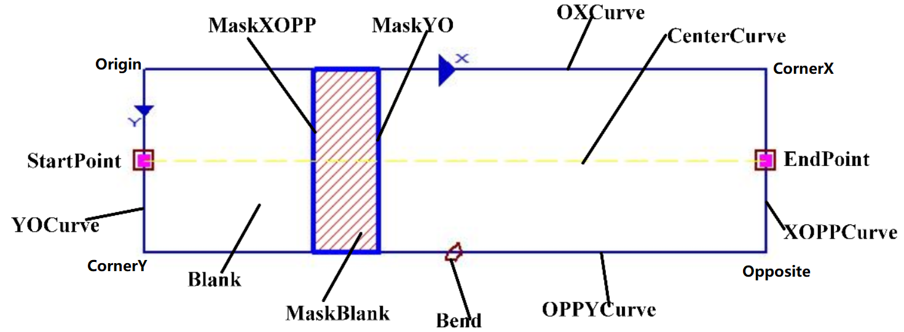
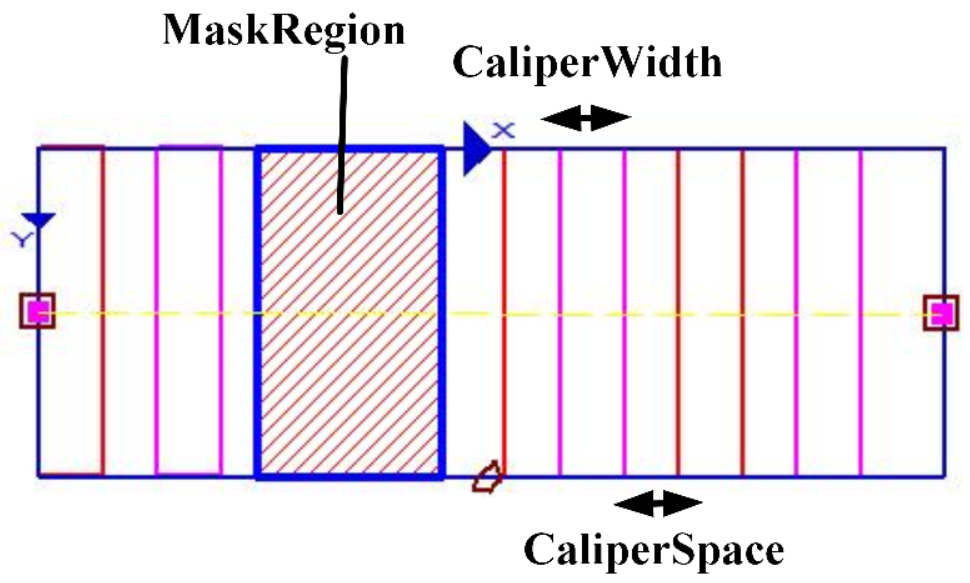
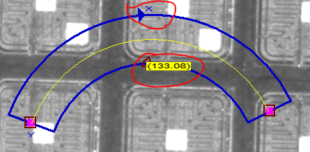
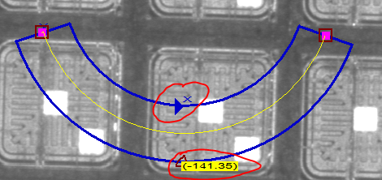
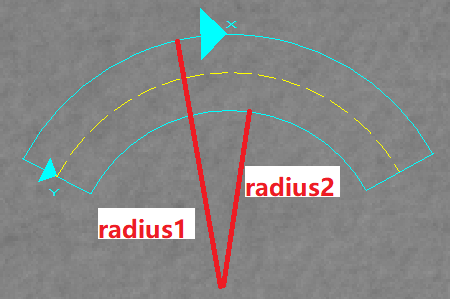
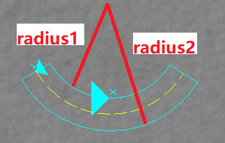

表示可变矩形（矩形或者圆环段），对应的图形Gui为scGuiRectEx，例如边宽检测工具的线边宽区域、圆边宽区域。


| 分类 | 接口名称 | 接口描述 |
|---|---|---|
| 构造 | scRectEx | scRectEx()默认构造函数。 |
| 函数 | GetOriginPoint | 获取可变起始点Origin。 |
| SetOriginPoint | 设置可变起始点Origin。 | |
| GetXLength | 获取X方向长度。 | |
| SetXLength | 设置X方向长度。 | |
| GetYLength | 获取Y方向长度。 | |
| SetYLength | 设置Y方向长度。 | |
| GetRotateAngle | 获取旋转角度。 | |
| SetRotateAngle | 设置旋转角度。 | |
| GetBendAngle | 获取弯曲角度。 | |
| SetBendAngle | 设置弯曲角度。 | |
| GetCenterRadiusStartSpan | 获取可变矩形的圆心、半径、起始角度和弯曲角度。 | |
| GetAngleStart | 获取可变矩形的起始角度。 | |
| SetCenterRadiusStartSpan | 设置可变矩形的圆心、半径、起始角度和弯曲角度。 | |
| GetCircularArcs | 获取可变矩形的两个圆环段。 | |
| GetCornerPx | 获取可变矩形x角点位置，即CornerX。 | |
| GetCornerPopp | 获取可变矩形opp角点位置，即Opposite。 | |
| GetCornerPy | 获取可变矩形y角点位置，即CornerY。 | |
| GetCenterPoint | 获取可变矩形的中心点。 | |
| GetMiddlePoint | 获取可变矩形中点（OX/YOPP弧段中点、矩形中心点）。 |
功能：构造scRectEx对象。
参数：无。
返回值：无。
功能：获取可变起始点Origin。
参数：无。
返回值：可变起始点坐标，sc2Vector类型。
功能：设置可变起始点Origin。
参数：
返回值：bool类型，表示是否设置成功。
功能：获取X方向长度。
参数：无。
返回值：X方向长度，浮点数类型。
功能：设置X方向长度。
参数：
返回值：bool类型，表示是否设置成功。
功能：获取Y方向长度。
参数：无。
返回值：Y方向长度，浮点数类型。
功能：设置Y方向长度。
参数：无。
返回值：bool类型，表示是否设置成功。
功能：获取旋转角度。
参数：无。
返回值：旋转角度，浮点数类型。
功能：设置旋转角度。
参数：
返回值：bool类型，表示是否设置成功。
功能：获取弯曲角度，参见图2，可通过弯曲角度和其角度确定终止角度。
参数：无。
返回值：弯曲角度，取值范围[-360, 360]，浮点数类型。
功能：设置弯曲角度，参见图2。
参数：
返回值：bool类型，表示是否设置成功。
功能：获取可变矩形的圆心、半径、起始角度和弯曲角度。
参数：
center：获取的圆心，sc2Vector类型。需要先创建一个sc2Vector类型的变量，然后传入该函数。
radius1：获取的半径，可变矩形OX圆弧段半径，输出，浮点数类型。需要先创建一个浮点数变量，然后传入该函数。该半径对应Origin和CornerX构成的边，从Gui图形上看，即标注了X的边，参见图2。
radius2：获取的半径，可变矩形YOPP圆弧段半径，输出，浮点数类型。需要先创建一个浮点数变量，然后传入该函数。该半径对应CornerY和Opposite构成的边，参见图2。
anglestart：获取的起始角度，输出，浮点数类型。需要先创建一个浮点数变量，然后传入该函数。
anglespan：获取的弯曲角度，输出，浮点数类型，可以为负值，参考图2所示，X方向如果为顺时针则弯曲角度为正，X方向如果逆时针则弯曲角度为负。需要先创建一个浮点数变量，然后传入该函数。
返回值：无。
 
 
图2 半径、弯曲角度
功能：获取可变矩形的起始角度。
参数：无。
返回值：可变矩形的起始角度，取值范围[0, 360]，浮点数类型。
功能：设置可变矩形的圆心、半径、起始角度和弯曲角度。
参数：
center：圆心，sc2Vector类型。
radius1：半径，可变矩形OX圆弧段半径，浮点数类型。该半径对应Origin和CornerX构成的边，从Gui图形上看，即标注了X的边，参见图2。
radius2：半径，可变矩形YOPP圆弧段半径，浮点数类型。该半径对应CornerY和Opposite构成的边，参见图2。
anglestart：起始角度，浮点数类型。
anglespan：弯曲角度，浮点数类型，可以为负值，参考图2所示，X方向如果为顺时针则弯曲角度为正，X方向如果逆时针则弯曲角度为负。
返回值：bool类型，表示是否设置成功。
功能：获取可变矩形的两个圆弧段。
参数：
circular_arc1：圆弧1，可变矩形OX圆弧段，输出，scCircularArc类型。需先创建一个scCircularArc类型变量，然后传入该函数。
circular_arc2：圆弧2，可变矩形YOPP圆弧段，输出，scCircularArc类型。需先创建一个scCircularArc类型变量，然后传入该函数。
返回值：无。
功能：获取可变矩形x角点位置，即CornerX。
参数：无。
返回值：可变矩形x角点位置，sc2Vector类型。
功能：获取可变矩形opp角点位置，即Opposite。
参数：无。
返回值：可变矩形opp角点位置，sc2Vector类型。
功能：获取可变矩形y角点位置，即CornerY。
参数：无。
返回值：可变矩形y角点位置，sc2Vector类型。
功能：获取可变矩形的中心点。
参数：无。
返回值：可变矩形的中心点，sc2Vector类型。
功能：获取可变矩形中点（OX/YOPP弧段中点、矩形中心点）。
参数：
m1：Origin和CornerX的中心点，输出，sc2Vector类型。需先创建一个sc2Vector类型变量，然后传入该函数。
m2：CornerY和Opposite的中心点，输出，sc2Vector类型。需先创建一个sc2Vector类型变量，然后传入该函数。
m3：矩形中心点，输出，sc2Vector类型。需先创建一个sc2Vector类型变量，然后传入该函数。
返回值：无。
无
无